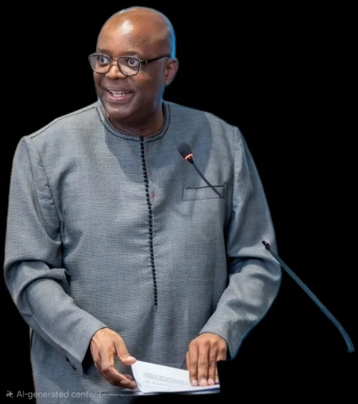

AIEG delivers an integrated suite of programmes and consulting services designed to foster ethical transformation, institutional reform, and sustainable governance across both public and private sectors.
The African Institute for Ethics and Governance (AIEG) is an African-based organisation dedicated to promoting ethical leadership, institutional integrity, and governance across the public and private sectors. Founded under the leadership of Professor Eddy Maloka, Nojozi Nogolide, Norman Murray Ingledew, Dr Wynand Goosen, and Patrick Mugumo. AIEG is driven by the belief that ethical transformation is central to Africa’s development. Through education, research, advisory services, and leadership development, AIEG strengthens governance systems, ethical cultures, and accountability mechanisms in governments, corporates, and civil society—positioning integrity as a foundation for sustainable growth.
To be Africa’s leading institute for ethical transformation and governance excellence — shaping a culture of integrity and accountability in institutions and enterprises.
To advance ethical leadership, institutional integrity, and governance through education, research, advisory services, and leadership development across all sectors.

Founder & Institutional Development Partner
Professor Eddy Maloka is a Visiting Professor at the University of Johannesburg and the former Chief Executive Officer of the African Peer Review Mechanism. With over 30 years of experience in public service, diplomacy, and academia, Maloka has established himself as an expert in leadership and institutional development. He holds a Ph.D. from the University of Cape Town and a Master's degree from the Institute of International and Development Studies in Geneva, Switzerland.
Founding Funder & Executive Director
Nogolide Nojozi holds a Master's degree in Public Management and Development from the University of Witwatersrand. She possesses a robust set of skills and experience in fostering good governance practices and engineering strategic interventions that have led to many organisational growths, improved performance, and stability in the institutions she has served. She has navigated complex governance frameworks crucial for ethical leadership building and good governance conduct. As a diplomat by training, she has participated in numerous international platforms to foster relations on best global practices with various stakeholders.
Founding Funder & Strategic Finance Partner
Norman has extensive business experience and knowledge of several African industries and countries over the past 30 years. As a Pilot in her Majesty’s government, he developed a sense of values and dedication that served him well in his business career. He trained and graduated from the Britannia Royal Naval College (BRNC) in Dartmouth, United Kingdom, where he served as a Naval Officer and Specialist Pilot for various jet aircraft. In South Africa, Norman has also been a non-executive director of several listed companies on the Johannesburg Stock Exchange, specialising in retail, wholesale plumbing hardware distribution, mining, and IT. Norman possesses extensive experience and leadership qualities and is dedicated to South Africa's development. As head of Business Development, he is well-positioned to inspire corporate South Africa to foster a new value system that resists corruption at all levels.
Founding Funder & Research, Policy & Governance Advisor
Dr Wynand Goosen is the CEO of the Infomage RIMS Group and a seasoned strategist and human capital management expert with a distinguished track record in designing and implementing high-impact development systems across the public and private sectors. He pioneered South Africa’s first Skills Development Facilitator Programme, authored the New Venture Creation Programme for entrepreneurial development, established structured entrepreneurial incubators, and developed foresight, innovation, and management information systems that link strategy directly to execution and productivity. His work includes facilitating strategic development workshops, creating international collaborative frameworks between South Africa and the European Union. Dr Goosen has founded several successful enterprises, including The Learning Corporation Ltd, The Infomage RIMS Group, SkillzBook, and Gold Rose Investments. He holds three doctoral degrees in Business, Metaphysics and Human Capital, as well as a Postdoctoral qualification from Switzerland. He serves on the boards of multiple professional organizations and is an internationally recognised lecturer, PhD supervisor and examiner in Management and Leadership, as well as a well-known conference speaker featured in print and broadcast media.
Founding Funder & Strategic Partnerships Director
Patrick is a highly experienced professional with over a decade of expertise in Project Management, Business Management, Information Technology, and Human Resources. Currently, he holds the position of Director at IRG Group and is a distinguished member of the South African Board for People Practices (SABPP). He has earned the Master’s HR Professional (MHRP) designation and serves as the Deputy Chair of the SABPP Ethics Committee. Patrick has a keen focus on integrating technology and innovation into HR practices, and he is a specialist in leveraging Artificial Intelligence (AI) to drive efficiency and excellence. He has a master’s degree in Programme Management and is actively pursuing a Doctorate in Leadership, Technology, and Innovation Management.